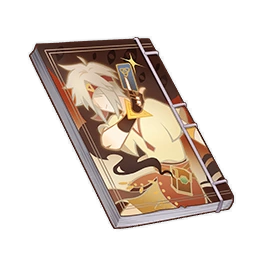

Sumeru · Books & Literature
King of Invokations (Book)
A quest-item excerpt from Fukumoto’s light novel about Genius Invokation TCG, following Abu’s duel with the Crocodile King.

A quest-item excerpt, not a series synopsis
King of Invokations is cataloged as a Sumeru book and described in-game as a light novel centered on Genius Invokation TCG. The archive item is found on a shelf in Mondstadt during the Duel! The Summoners’ Summit! event. Its preserved text is an excerpt, not a complete volume or a summary of the entire series.
The excerpt closes with the label King of Invokations #1, Grand Ending! That wording identifies the passage as the first book’s ending. It does not supply an author biography, the novel’s full plot, or evidence that its fantastical world exists outside the fiction.
Fukumoto and Genius Invokation TCG
Fukumoto is the author. In the Sumeru commission bearing the same title, he says he is from Inazuma and that Sumeru Akademiya researchers approached him through Yae Publishing House to write a light novel based on the card game’s rules. He describes the first book as a bestseller that helped the game’s sales, while also recounting the difficulty of writing before the researchers had settled those rules.
The later World Quest Next Time, On King of Invokations... returns to Fukumoto as he develops the third book. There, he considers departing from the card game’s normal mechanics to make the duels more exciting. The premise is therefore an in-world tie-in novel whose author takes creative liberties, not an official manual of TCG rules.
Abu’s duel and the Crocodile King
The surviving scene opens at the end of a duel across many worlds. Abu faces a masked opponent who reveals himself as the Crocodile King. Their exchange is surrounded by a cast of other duelists and observers: Dubbah, called lord of the seven seas; the Kitsune Cui; Nimue, who tries to connect to the Room of Duels; and Ariatos, the Knightly King of Duels.
The story gives Abu the victory, but does not end with a simple defeat of his rival. As the Crocodile King’s body crumbles, Abu wishes for the walls between worlds to break and for war to continue, ending with the declaration that the lord of duels will endure. The passage uses a deliberately melodramatic cliffhanger; it does not explain the mechanics of these realms or resolve what happens after the wish.
The book’s invented world and its names
The excerpt layers card-game language over an exaggerated fantasy: a Casket of Tomes, dice, a Room of Duels, a Sacred Realm, sealed combatants, and characters styled with titles such as Crocodile King, Ibis King, and Knightly King of Duels. Those are elements of Fukumoto’s story as printed in the item. Their appearance alone does not establish that these figures are historical people in Teyvat.
The book also makes jokes and genre turns inside its own scene, including the server Cui being sent to deliver fish soup while watching a cosmic duel. This contrast is part of the excerpt’s voice; it is not a clue that every named person or location has a one-to-one counterpart in the game’s history.
Event rumors are presented as rumors
During the 2023 TCG event, characters discuss competing theories about the game’s origins and the novel’s author. Charlotte reports speculation that the possessed boy from a legend was the writer and that the Crocodile King and Ibis King invented the game; she says Fukumoto came forward to deny the rumors. Paimon treats these theories as increasingly implausible, not confirmed history.
That conversation belongs to the event’s playful rumor mill around the Grand Prix. Keep it separate from Fukumoto’s own commission account of the book’s commission and from the item’s fictional excerpt. Similar names may invite comparisons with other lore, but this item and dialogue do not prove those identities.
What the record establishes
The item establishes that the first King of Invokations novel is a light novel about Genius Invokation TCG, credits Fukumoto through related quest dialogue, and preserves the ending of a story in which Abu wins a duel against the Crocodile King before wishing for conflict between worlds. The commission and later World Quest add the series’ production context and show that Fukumoto works on later installments.
The text does not provide the whole novel, a definitive account of the card game’s origins, or proof that the novel’s cast reenacts Teyvat’s ancient history. Read the book as a fictional work within the game world and treat the event’s origin stories as speculation unless another in-game source confirms them.
This is an original CoreGG reading guide, not an official HoYoverse article or a reproduction of the game text. Source links below identify the records used so you can check the original context.
Sources & references
Check these sources for the original game text and reference trail.